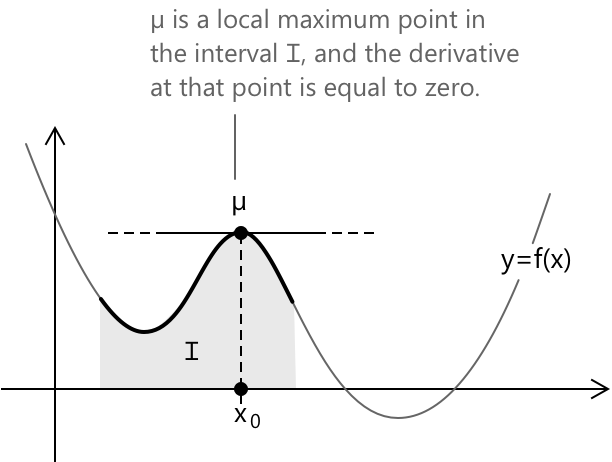
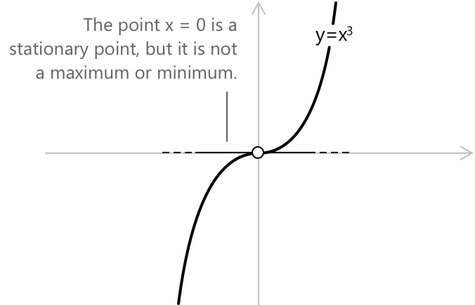
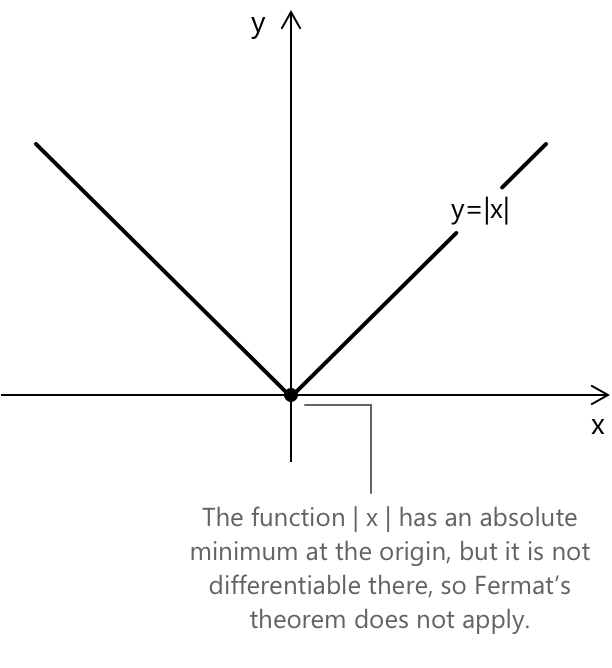

Теорема Ферма
Вступ
Теорема Ферма стверджує, що будь-який відносний максимум або мінімум диференційовної функції в її області визначення має бути в стаціонарній точці, тобто в точці, де перша похідна дорівнює нулю, а дотична є горизонтальною (паралельною \(x\)-осі).
Теорема Ферма формулює необхідну, але не достатню умову для визначення локальних екстремумів. Зокрема, якщо функція має локальний максимум або мінімум у точці та є диференційовною в ній, то її похідна в цій точці має дорівнювати нулю. Однак обернене твердження не є правильним: нульова похідна не обов'язково означає наявність екстремуму.
Теорема Ферма відіграє ключову роль у доведенні теореми Ролля.
Формулювання
Нехай задано функцію \( y = f(x) \), визначену на замкненому та обмеженому проміжку \([a, b]\) і диференційовну на відкритому проміжку \((a, b)\). Якщо функція досягає локального максимуму або мінімуму в точці \( x_0 \in (a, b) \), то похідна в цій точці має дорівнювати нулю:
\[ f’(x_0) = 0 \]
Наступний графік ілюструє теорему. У точці локального максимуму \( \mu \) всередині проміжку \( I \) похідна функції дорівнює нулю.

У певних випадках похідна функції стає рівною нулю в точці, яка не є ні максимумом, ні мінімумом. Такі точки називають стаціонарними точками без екстремуму, включаючи стаціонарні точки перегину, де похідна дорівнює нулю, але функція зберігає свій напрямок.
Доведення
Щоб довести теорему, припустимо, що \( x_0 \) є точкою локального максимуму. Тоді в околі \( I \) навколо \( x_0 \) має виконуватися така нерівність:
\[ f(x) \leq f(x_0) \quad \forall \, x \in I \] Звідси випливає, що приріст (частка різниці) задовольняє наступне:
Для \( h > 0 \): \[ \frac{f(x_0 + h) - f(x_0)}{h} \leq 0 \]
Для \( h < 0 \): \[ \frac{f(x_0 + h) - f(x_0)}{h} \geq 0 \]
З цих нерівностей, а також з означення похідної як границі частки різниці, випливає, що відповідні границі задовольняють:
\[ \lim_{h \to 0^+} \frac{f(x_0 + h) - f(x_0)}{h} \leq 0 \] \[ \lim_{h \to 0^-} \frac{f(x_0 + h) - f(x_0)}{h} \geq 0 \]
Якщо функція диференційовна в \( x_0\), то і ліва, і права границі існують і дорівнюють похідній. Єдиний спосіб, за якого ці дві нерівності можуть бути істинними одночасно, це якщо:
\[ f’(x_0) = 0 \]
Таким чином, теорема доведена, оскільки ми показали, що якщо диференційовна функція досягає локального екстремуму у внутрішній точці, похідна в цій точці обов'язково має бути рівною нулю.
Теорема Ферма стверджує, що якщо функція досягає локального максимуму або мінімуму в точці та є диференційовною в цій точці, то її похідна має дорівнювати нулю. Однак обернене твердження не є правильним: нульова похідна в точці не обов'язково означає, що ця точка є локальним максимумом або мінімумом.
Приклад 1
Розглянемо приклад застосування теореми Ферма. Припустимо, ми вивчаємо функцію дійсних чисел:
\[ f(x) = x^{3} – 3x^{2} + 2 \]
визначену для кожного дійсного числа. Оскільки це поліном, функція є неперервною та диференціовною на всій дійсній прямій. Це гарантує, що якщо вона досягає локального максимуму або мінімуму в якійсь внутрішній точці своєї області визначення, теорема Ферма гарантує, що похідна в цій точці має дорівнювати нулю. Щоб визначити, де функція може мати екстремуми, обчислимо її похідну:
\[ f’(x) = 3x^{2} – 6x = 3x(x – 2) \]
Похідна зникає саме тоді, коли \(3x(x – 2) = 0\), що відбувається при:
\[ x = 0 \quad \text{та} \quad x = 2 \]
Отже, ці два значення є єдиними кандидатами на внутрішні екстремуми, оскільки теорема Ферма стверджує, що будь-яка диференційовна функція, що досягає локального екстремуму, повинна мати горизонтальну дотичну в цій точці.
Щоб визначити характер цих точок, дослідимо поведінку похідної навколо них. Для \( x < 0 \) похідна додатна і функція зростає. Між \( 0 \) та \( 2 \) похідна стає від’ємною, тому функція спадає. Для \( x > 2 \) похідна знову стає додатною, що означає, що функція знову зростає. Ця зміна монотонності свідчить про те, що:
- для \( x = 0 \) функція переходить від зростання до спадання, що вказує на локальний максимум;
- для \( x = 2 \) функція переходить від спадання до зростання, що вказує на локальний мінімум.
| \[0\] | \[2\] | ||
|---|---|---|---|
| \( f'(x) \) | \( \boldsymbol{+} \) | \( \boldsymbol{-} \) | \( \boldsymbol{+} \) |
| \( f(x) \) | \( \boldsymbol{\nearrow} \) | \( \boldsymbol{\searrow} \) | \( \boldsymbol{\nearrow} \) |
Обчислення значень функції підтверджує цю класифікацію: \(f(0) = 2 \) є локальним максимумом, а \(f(2)= -2 \) є локальним мінімумом.
Цей приклад підкреслює важливу роль теореми Ферма: вона не гарантує, що кожна точка з нульовою похідною є екстремумом, але вона гарантує, що кожен внутрішній екстремум диференційовної функції має бути в такій точці. Таким чином, вона надає необхідну умову, яка спрямовує та звужує пошук максимумів і мінімумів.
Не всі стаціонарні точки є екстремумами
Функція \( f(x) = x^3 \) є наочним прикладом, що показує, що нульова похідна не обов'язково означає наявність локального екстремуму.

Похідна дорівнює:
\[ f’(x) = 3x^2 \]
При \( x = 0 \) маємо \(f’(0) = 0\). Таким чином, \( x = 0 \) є стаціонарною точкою. Хоча похідна в точці \( x = 0 \) дорівнює нулю, ця точка не є ні локальним максимумом, ні локальним мінімумом. Натомість x = 0 представляє стаціонарну точку перегину, де похідна дорівнює нулю. Проте функція зростає з обох боків цієї точки, не змінюючи напрямку.
Стаціонарні точки та поведінка на межі
Наявність стаціонарної точки — тобто точки, в якій похідна зникає — сама по собі не визначає, чи досягає функція в ній локального максимуму або мінімуму. Класифікація таких точок вимагає більш детального аналізу функції в околі точки-кандидата, а також розуміння структури області визначення. Розглянемо, наприклад, функцію модуля
\[ y = f(x) = |x| = \begin{cases} +x & \text{якщо } x \ge 0\\[4pt] -x & \text{якщо } x < 0 \end{cases} \]
яка досягає глобального мінімуму в точці \(x = 0\), хоча похідна в цій точці не існує.

Цей приклад ілюструє, що екстремуми можуть виникати не лише там, де похідна дорівнює нулю, а й там, де функція не є диференційовною, або в граничних точках області визначення. У випадку замкнених проміжків функція може досягати своїх екстремумів на кінцях проміжку незалежно від поведінки похідної всередині нього.
Навпаки, на відкритих проміжках або необмежених областях визначення екстремуми можуть бути відсутні, навіть якщо існують стаціонарні точки. Таким чином, повне розуміння максимумів і мінімумів вимагає спільного використання умови Ферма, дослідження диференційовності та ретельного аналізу області, на якій визначена функція.
Вибрана література
-
Harvard University O. Knill. The Mean Value Theorem and Rolle’s Theorem
-
UC Davis J. Hunter. Differentiable Functions
-
MIT J. Starr. Critical Points and Extrema